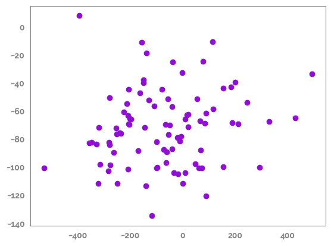

Using imputation_utils functions from the jmspack package¶
Showing the usage of the following imputation_utils functions¶
RMSE()
mice_forest()
mice_forest_tune()
groupby_mice()
simple_impute()
[1]:
import numpy as np
import pandas as pd
import matplotlib.pyplot as plt
from matplotlib.colors import LinearSegmentedColormap
import seaborn as sns
import os
[2]:
tmp = os.getcwd()
os.chdir(tmp.split("jmspack")[0] + "jmspack")
from jmspack.imputation_utils import (
RMSE,
mice_forest,
mice_forest_tune,
groupby_mice,
simple_impute
)
from jmspack.utils import JmsColors, apply_scaling
from jmspack.frequentist_statistics import correlation_analysis
os.chdir(tmp)
[3]:
from sklearn.datasets import make_regression
from sklearn.linear_model import LinearRegression
from sklearn.metrics import r2_score
[4]:
if "jms_style_sheet" in plt.style.available:
_ = plt.style.use("jms_style_sheet")
[5]:
X, y, coefs = make_regression(n_samples=100, n_features=10, coef=True)
pd.DataFrame(coefs).T
[5]:
| 0 | 1 | 2 | 3 | 4 | 5 | 6 | 7 | 8 | 9 | |
|---|---|---|---|---|---|---|---|---|---|---|
| 0 | 46.52999 | 14.168002 | 83.395475 | 38.226114 | 31.998491 | 16.711863 | 42.769433 | 69.875444 | 61.974311 | 96.825477 |
[6]:
df = pd.DataFrame(X, columns=[f"p{x}" for x in range(X.shape[1])]).assign(**{"target": y,
"user_id": np.repeat(np.arange(10), repeats=10),
"date": pd.date_range("04-04-2021", "10-12-2021")[0:100]})
miss_df = df.copy()
[7]:
feature_list = df.filter(regex="p").columns.tolist()
[8]:
np.random.seed(42)
miss_df[feature_list] = miss_df[feature_list].mask(np.random.choice([True, False], size=1000, p=[0.8, 0.2]).reshape(100, 10))
miss_df=miss_df.rename(columns=dict(zip(feature_list, [f"{x}_w_miss" for x in feature_list])))
[9]:
_ = plt.figure(figsize=(20, 4))
_ = sns.heatmap(data=df[feature_list].T)
_ = plt.figure(figsize=(20, 4))
_ = sns.heatmap(data=miss_df[[f"{x}_w_miss" for x in feature_list]].T)
[10]:
feature = feature_list[0]
id_column = "user_id"
date_column = "date"
[11]:
assign_dict = {feature: df[feature],
f"{feature}_mean": lambda d: d[f"{feature}_w_miss"].pipe(simple_impute, strategy="mean"),
f"{feature}_median": lambda d: d[f"{feature}_w_miss"].pipe(simple_impute, strategy="median"),
# f"{feature}_mice_groupby": lambda d: groupby_mice(data=d, ids=d[id_column].unique().tolist())[f"{feature}_w_miss"].values,
f"{feature}_mice": lambda d: mice_forest(data=d.set_index([id_column, date_column]))[f"{feature}_w_miss"].values,
f"{feature}_linear_interpolate": lambda d: d[f"{feature}_w_miss"].interpolate(method="linear"),
f"{feature}_time_interpolate": lambda d: d.set_index(date_column)[[f"{feature}_w_miss"]].interpolate(method="time").values,
f"{feature}_nearest_interpolate": lambda d: d[f"{feature}_w_miss"].interpolate(method="nearest"),
# f"{feature}_poly_5_interpolate": lambda d: d[f"{feature}_w_miss"].interpolate(method='polynomial', order=5),
f"{feature}_spline_5_interpolate": lambda d: d[f"{feature}_w_miss"].interpolate(method='spline', order=5),
}
[12]:
_ = plt.figure(figsize=(20,5))
plot_df = (miss_df
[[f"{feature}_w_miss", id_column, date_column]]
.assign(**assign_dict)
.drop(f"{feature}_w_miss", axis=1)
.melt(id_vars = [id_column, date_column]))
_ = sns.lineplot(data=plot_df, x=date_column, y="value", hue="variable")
[13]:
comp_df = (miss_df[[f"{feature}_w_miss", id_column, date_column]]
.assign(**assign_dict)
.filter(regex=feature)
.pipe(apply_scaling)
.drop(f"{feature}_w_miss", axis=1)
.dropna()
)
rmse_df = pd.concat([pd.DataFrame({f"{feature}": RMSE(comp_df[feature], comp_df[y])}, index=[y]) for y in comp_df.drop(feature, axis=1)])
comp_df.head()
[13]:
| p0 | p0_mean | p0_median | p0_mice | p0_linear_interpolate | p0_time_interpolate | p0_nearest_interpolate | p0_spline_5_interpolate | |
|---|---|---|---|---|---|---|---|---|
| 5 | 0.357183 | 0.395085 | 0.395085 | 0.395085 | 0.395085 | 0.395085 | 0.395085 | 0.395085 |
| 6 | 0.457002 | 0.501464 | 0.482303 | 0.673273 | 0.291220 | 0.291220 | 0.395085 | 0.298811 |
| 7 | 0.238051 | 0.501464 | 0.482303 | 0.000000 | 0.187355 | 0.187355 | 0.083490 | 0.367580 |
| 8 | 0.240395 | 0.083490 | 0.083490 | 0.083490 | 0.083490 | 0.083490 | 0.083490 | 0.083490 |
| 9 | 0.238101 | 0.501464 | 0.482303 | 0.083490 | 0.196967 | 0.196967 | 0.083490 | 0.468217 |
[14]:
colors = [JmsColors.YELLOW, "#F7F1F0", JmsColors.PURPLE]
n_bins = 100 # Discretizes the interpolation into bins
cmap_name = 'heatmap_cmap'
cm = LinearSegmentedColormap.from_list(
cmap_name, colors, N=n_bins)
feat_list = list(assign_dict.keys())
corr_df = correlation_analysis(data=comp_df, col_list=[feat_list[0]], row_list=feat_list[1:], method="spearman")["summary"]
corr_df.style.background_gradient(cmap=cm,
subset="r-value",
vmin=0,
vmax=1,
axis=0).format({'r-value':'{:.4f}', 'p-value':'{:.3f}'})
[14]:
| analysis | feature1 | feature2 | r-value | p-value | stat-sign | N | |
|---|---|---|---|---|---|---|---|
| 0 | Spearman Rank | p0 | p0_mean | 0.2485 | 0.020 | True | 88 |
| 1 | Spearman Rank | p0 | p0_median | 0.2485 | 0.020 | True | 88 |
| 2 | Spearman Rank | p0 | p0_mice | 0.9050 | 0.000 | True | 88 |
| 3 | Spearman Rank | p0 | p0_linear_interpolate | 0.1572 | 0.144 | False | 88 |
| 4 | Spearman Rank | p0 | p0_time_interpolate | 0.1572 | 0.144 | False | 88 |
| 5 | Spearman Rank | p0 | p0_nearest_interpolate | 0.0478 | 0.658 | False | 88 |
| 6 | Spearman Rank | p0 | p0_spline_5_interpolate | 0.2591 | 0.015 | True | 88 |
[15]:
_ = plt.figure(figsize=(2,3))
_ = sns.heatmap(data=rmse_df,
annot=True,
fmt=".4g",
cmap=cm)
_ = plt.yticks(rotation=0)
[16]:
_ = sns.lmplot(data=comp_df,
x=feature,
y=f"{feature}_mice",
line_kws={"color":JmsColors.YELLOW}
)
[17]:
mod = LinearRegression()
_ = mod.fit(X=comp_df[[feature]], y=df.loc[6:93, "target"])
y_pred = mod.predict(X=comp_df[[feature]])
print(r2_score(y_true=df.loc[6:93, "target"], y_pred=y_pred))
_ = plt.scatter(df.loc[6:93, "target"], y_pred)
0.020801599955983407

[18]:
mod = LinearRegression()
_ = mod.fit(X=comp_df[[f"{feature}_mice"]], y=df.loc[6:93, "target"])
y_pred = mod.predict(X=comp_df[[f"{feature}_mice"]])
print(r2_score(y_true=df.loc[6:93, "target"], y_pred=y_pred))
_ = plt.scatter(df.loc[6:93, "target"], y_pred)
0.03209983328274635